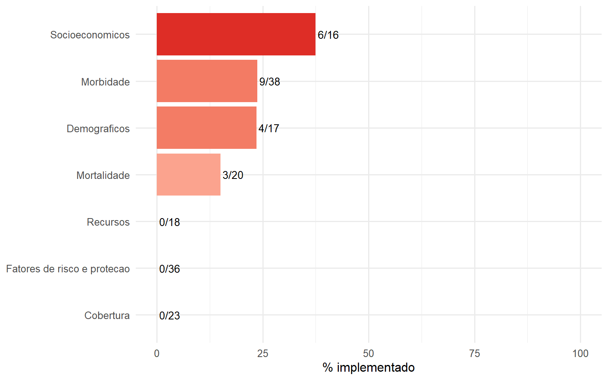

Indicadores RIPSA (Livro Verde)
168
Confirmados (≥0.55)
22
Sugestivos (0.3-0.55)
0
Completude geral
13.1%

| Dimensão | Total | Implementados | Pendentes | % Completo |
|---|---|---|---|---|
| Socioeconomicos | 16 | 6 | 10 | 37.5 |
| Morbidade | 38 | 9 | 29 | 23.7 |
| Demograficos | 17 | 4 | 13 | 23.5 |
| Mortalidade | 20 | 3 | 17 | 15.0 |
| Cobertura | 23 | 0 | 23 | 0.0 |
| Fatores de risco e protecao | 36 | 0 | 36 | 0.0 |
| Recursos | 18 | 0 | 18 | 0.0 |
ripsa_matrix()), com 168 indicadores nas 7 dimensões (DEM, SOC, MRT, MRB, FRP, REC, COB).indi_* implementadas no pacote (brindi_indicator_catalog()).